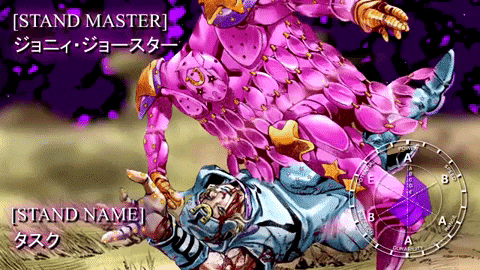
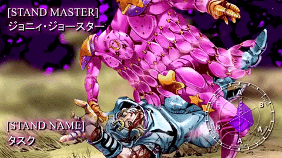

welcome to Jojos bizarre Adventure
Killer Queen
Killer Queen, a Stand belonging to Yoshikage Kira, the main antagonist of the fourth story arc in Jojo's Bizarre Adventure (JJBA) titled "Diamond is Unbreakable," is undeniably one of the most iconic and formidable Stands in the series. Its sleek and humanoid design, adorned with various symbols of death, perfectly complements its deadly abilities. One of its primary abilities, known as "Sheer Heart Attack," takes the form of an invulnerable miniature tank that seeks out and detonates upon contact with heat sources. This ability makes Killer Queen a versatile and lethal weapon in combat.However, the most infamous ability of Killer Queen is "Bites the Dust." This ability allows Kira to plant a time-delayed bomb within a target, triggering a time loop whenever someone discovers Kira's true identity. Not only does this ability serve as a formidable defense mechanism, but it also reflects Kira's desire for secrecy and control over his murderous activities. The introduction of "Bites the Dust" intensifies the tension in the story, as the protagonists find themselves entangled in a dangerous game of cat and mouse while trying to unravel the mystery of Kira's identity.Beyond its role as a fearsome antagonist Stand, Killer Queen holds significant thematic importance in part 4 of JJBA. It serves as an anchor for exploring themes of obsession, identity, and the consequences of one's actions. Kira's obsession with maintaining a peaceful and unremarkable life clashes with his dark desires, which are symbolized by the terrifying power of Killer Queen. As the protagonists confront Kira and his Stand, they are compelled to confront their own fears and weaknesses, leading to a climactic battle that tests their determination and bond with one another.
tusk act 4
Tusk Act 4 stands as the ultimate progression of the Stand Tusk, which is wielded by Johnny Joestar in the renowned manga series "JoJo's Bizarre Adventure: Steel Ball Run." As the central protagonist of the seventh story arc, Johnny embarks on a profound voyage of self-discovery and personal growth, ultimately leading to the emergence of Tusk Act 4. This Stand surpasses its predecessors in terms of abilities, endowing Johnny with unparalleled strength and adaptability in combat. The primary attribute of Tusk Act 4 revolves around the concept of "Infinite Rotation," enabling Johnny to harness the immense rotational energy of the Spin to devastating effect.The design and capabilities of Tusk Act 4 are intricately intertwined with the overarching themes of "Steel Ball Run," particularly the exploration of the American frontier and the pursuit of freedom and redemption. By transcending physical limitations and manipulating space itself, Tusk Act 4 serves as a symbol of Johnny's relentless quest for liberation and transcendence. Its sleek and futuristic appearance starkly contrasts with the rugged aesthetic of the Wild West backdrop, emphasizing Johnny's visionary nature and his role as a trailblazer.Beyond its role as a formidable combat Stand, Tusk Act 4 holds significant narrative importance, acting as a catalyst for Johnny's personal growth and evolution as a character. Through his journey alongside Tusk, Johnny learns to confront his past, overcome his limitations, and fully embrace his destiny as a true protagonist. The culmination of Tusk Act 4 signifies the apex of Johnny's character arc, as he embraces his newfound power and embarks on a final confrontation with the opposing forces that stand in his way.
Wonder of u
The Stand known as The Wonder of U, or simply "Wonder of U" or "Wu," is wielded by Tooru, the primary antagonist in the eighth story arc of JoJolion. Throughout the arc, the abilities of this Stand remain veiled in secrecy, gradually unveiling its true nature and capabilities. Its main power, "Wonder of U," grants it the ability to manipulate probability and luck, seemingly causing misfortune to befall those who interact with its user, Tooru. This power can manifest in various ways, such as accidents, illnesses, or injuries, making it a formidable and unpredictable foe.The symbolism embedded within The Wonder of U mirrors the central themes of part 8, particularly focusing on the concepts of fate and the repercussions of actions. By altering probabilities, The Wonder of U forces the characters to confront life's unpredictability and the outcomes of their choices. Its presence in the narrative generates tension and unease as the protagonists struggle with the uncertainty of their circumstances and the looming danger posed by Tooru and his Stand.The design of The Wonder of U, featuring a humanoid form and an ethereal presence, adds to its mystique and otherworldly essence. Its mysterious powers and elusive user contribute to its reputation as one of the most captivating and formidable Stands in the "JoJo's Bizarre Adventure" series. As the story nears its climax, the full extent of The Wonder of U's abilities and significance is poised to play a crucial role in resolving the arc's enigmas and conflicts.
helpful links

 
